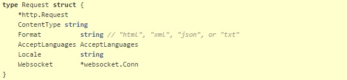

Tổng quan
q
q
q
q
q
Cài đặt Go
- Vào trang https://golang.org/dl/ để tải bản cài đặt Go
Có 2 file 2 cài đặt tương ứng với 32-bit và 64-bit
Khi dùng file .zip thì nên giải nén vào thư mục C:\Go
Thiết lập biến môi trường (environment variables):
- Khi dùng file .msi để cài đặt thì việc thiết lập biến môi trường được thực hiện tự động
- Khi dùng file .zip thì cần vào control panel -> system -> advanced system settings -> vào tab advanced -> environment variables -> new -> browse directory -> đi đến add thư mục bin trong C:\Go\bin
Kiểm tra cài đặt:
- Dùng cmd tạo thư mục %USERPROFILE%\go
- Tạo tiếp thư mục con src/hello trong go
- Code demo trong hello.go

- Build bằng go tool
- Kết quả: hello world
Gỡ cài đặt Go:
- Xóa thư mục go tại địa chỉ C:\Go
Set up GOPATH
GOPATH là thư mục chứa tất cả code.
- Tạo ra thư mục mkdir ~/gocode
- Đặt thư mục này như là Gopath trong Go: export GOPATH=~/gocode
- Lưu GOPATH: echo export GOPATH=$GOPATH >> ~/.bash_profile
Modules
Để thêm một module vào ứng dụng, hãy thêm dòng này vào conf/app.conf

Để tắt module, nhập đường dẫn trống

Ví dụ, để bật module test runner

Module Jobs
Thực hiện công việc không đồng bộ bên ngoài luồng yêu cầu
Chẳng hạn như:
- Một công việc định kì, ví dụ cập nhật ticker 5 phút một lần
- - Một công việc thực hiện một lần, ví dụ như gửi email hoặc cập nhật thông tin
Cấu hình:
Thêm module.jobs vào file app.conf

Để chạy một tác vụ khởi động ứng dụng, sử dụng revel.OnAppStart () để đăng ký một chức năng. Revel chạy các nhiệm vụ này một cách liên tục, trước khi bắt đầu máy chủ. Lưu ý rằng chức năng này không thực sự sử dụng mô-đun công việc, nhưng nó có thể được sử dụng để gửi một công việc để thực hiện mà không ngăn chặn khởi động máy chủ.
Module Testing
Revel cung cấp framework testing để dễ dàng viết và chạy kiểm tra chức năng của một ứng dụng.
Các chức năng thử nghiệm cần đặt trong thư mục tests/
Controllers
revel.Controller dùng trong xử lý một yêu cầu và điều khiển:
- Các yêu cầu được gửi đến
- Đáp ứng lại bằng Html, Json, Xml,...
Một controller luôn nhúng *revel.Controller vào đầu tiên

revel.Controller là context cho một yêu cầu và chứa dữ liệu Request và Response
Dưới dây là một số thành phần được sử dụng nhiều nhất và định nghĩa type/struct để cung cấp cho Controller, Request, Params và Response
URL Routing:
URL’s and routes được định nghĩa trong file conf/route và có 3 cột như sau: